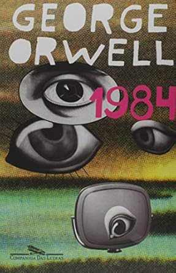

O Príncipe Maquiavel
Mesmo que você nunca tenha ouvido falarem nicolau maquiavel, deve conhecer o termo
maquiavélico. Dizemos que uma pessoa a e maquiavélica quando faz qualquer coisas para
atingir seu objetivo. Os gins justificam os meios. Esta e a síntese do pensamento
maquiavélico que conhecemos hoje. Porem, ao contrário do que muita gente pensa, essa
frase não esta em nenhum livro.
Learn More

O menino do pijama listrado
Bruno tem nove anos e não sabe nada sobre o Holocausto e a Solução Final contra os
judeus. Também não faz idéia que seu país está em guerra com boa parte da Europa, e
muito menos que sua família está envolvida no conflito. Na verdade, Bruno sabe apenas
que foi obrigado a abandonar a espaçosa casa em que vivia em Berlim e a mudar-se para
uma região desolada, onde ele não tem ninguém para brincar nem nada para fazer. Da
janela do quarto, Bruno pode ver uma cerca, e para além dela centenas de pessoas de
pijama, que sempre o deixam com frio na barriga.
Em uma de suas andanças Bruno conhece Shmuel, um garoto do outro lado da cerca que
curiosamente nasceu no mesmo dia que ele. Conforme a amizade dos dois se intensifica,
Bruno vai aos poucos tentando elucidar o mistério que ronda as atividades de seu pai. O
menino do pijama listrado é uma fábula sobre amizade em tempos de guerra, e sobre o que
acontece quando a inocência é colocada diante de um monstro terrível e inimaginável.
Learn More

As mil partes do meu coração
Merit Voss está cansada de guardar os segredos de sua família e decide que chegou a hora
de desaparecer. Mas antes de sumir do mapa, ela vai revelar um por um, tudo que a
família vem guardando por anos.
A cerca branca ao redor da sua casa é a única coisa normal na vida de Merit. Parte de
uma família peculiar e cheia de segredos, ela mora em uma antiga igreja, batizada de
Dólar Voss. A mãe, curada de um câncer, mora no porão, e o pai e o restante da família,
no andar de cima. Isso inclui sua nova esposa, a ex-enfermeira da ex-mulher, o pequeno
Moby, fruto desse relacionamento, o irmão mais velho, Utah, e a gêmea idêntica de Merit,
Honor. E, como se a casa não tivesse cheia o bastante, ainda chegam o excêntrico Luck e
o misterioso Sagan. Mas Merit sente que é o oposto de todos ali.
Learn More

É assim que começa
Lily Bloom continua administrando uma floricultura. Seu ex-marido abusivo, Ryle Kincaid,
ainda é um cirurgião. Mas agora os dois estão oficialmente divorciados e dividem a
guarda da filha, Emerson.
Quando Lily esbarra em Atlas ― com quem não fala há quase dois anos ―, parece que
finalmente chegou o momento de retomar o relacionamento da adolescência, já que ele
também está solteiro e parece retribuir os sentimentos de Lily. Mas apesar de
divorciada, Lily não está exatamente livre de Ryle. Culpando Atlas pelo fim de seu
casamento, Ryle não está nada disposto a aceitar o novo relacionamento de Lily, ainda
mais com Atlas, o último homem que aceitaria ver perto de sua filha e da ex-esposa.
Alternando entre os pontos de vista de Atlas e Lily, É assim que começa retoma logo após
o epílogo de É assim que acaba . Revelando mais sobre o passado de Atlas e acompanhando
a jornada de Lily para abraçar a sua segunda chance, no amor enquanto lida com um
ex-marido ciumento, É assim que começa prova que ninguém entrega uma leitura mais
emocionante do que Colleen Hoover.
Learn More